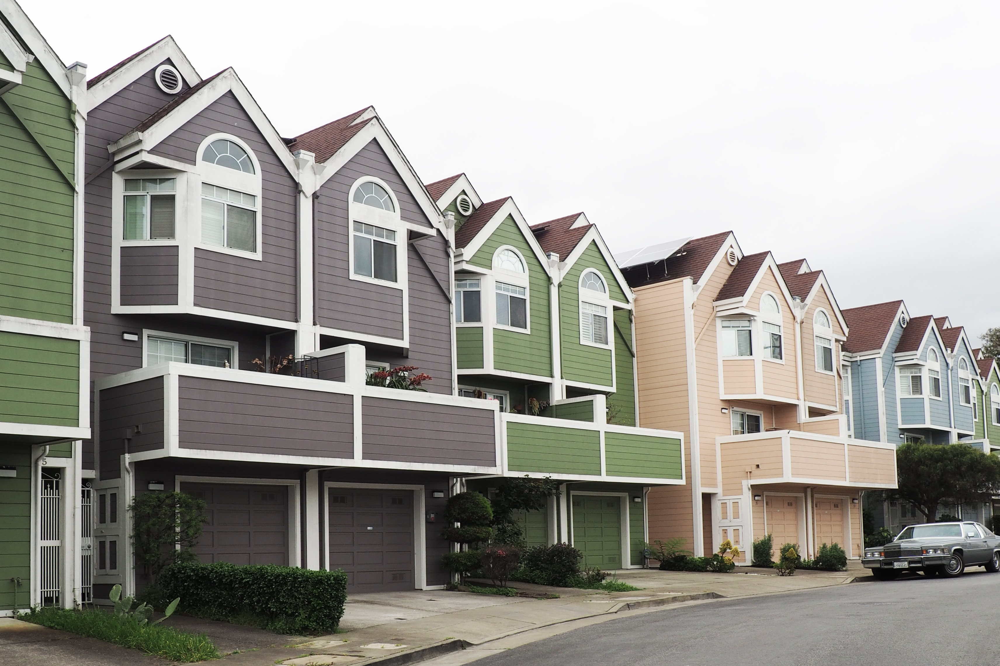

This website contains a collection of my projects, each showcasing my passion for data analysis. These projects encompass a wide range of data analysis tools and programming languages, offering a glimpse into my diverse skill set and problem-solving abilities. Each project is a unique journey, providing insightful solutions to real-world challenges.
Projects
- Conducted an in-depth analysis of global restaurant rankings, using data visualization and comparative analysis to uncover patterns in top-rated restaurants across various countries and years.
- Utilized heatmaps and bar charts to explore the distribution and longevity of restaurants maintaining top positions, providing insights into the factors contributing to sustained excellence and global recognition in fine dining.
- Identified key countries consistently dominating the top restaurant rankings, highlighting trends and stability in the culinary world over time.
- Conducted a comprehensive analysis of factors influencing car prices, utilizing data visualization techniques to examine how various attributes such as mileage, engine size, and brand impact the overall valuation of vehicles.
- Evaluated the effectiveness of various machine learning models, including linear regression, decision trees, and random forest regression, to determine the most accurate approach for predicting car prices and offering guidance for further model improvements.

- Conducted comprehensive analysis of retail sales data in Istanbul (100k+ records), involving data cleaning, preparation, exploratory data analysis (EDA) to uncover meaningful patterns and insights, including the correlation between total revenue and currency rates.
- Developed highly accurate predictive models with an accuracy rate of 98%, resulting in enhanced sales predictions, optimized marketing strategies, and improved financial performance.

- Conducted in-depth analysis of US real estate data (200k+ entries) using SQL, applying various techniques such as group by, joins, subqueries, and window functions to uncover insights on property prices, trends, and geographical distribution.
- Created an interactive Tableau dashboard to visualize findings, providing a clearer understanding of market dynamics and supporting data-driven decision-making.

- Analyzed a massive dataset of 5 million records for a bike-sharing company, utilizing a structured analytical approach. That included formulating questions, preparing and processing the data, performing extensive analysis, and effectively communicating findings to support informed business decision-making.
- The project uncovered valuable insights and actionable recommendations to improve customer experience, boost profitability, and drive business growth.
- Performed comprehensive exploratory data analysis on insurance charges, exploring variable distributions and correlations to identify key cost drivers and their impacts.
- Developed a robust linear regression model with an accuracy of 86% in predicting insurance charges, supporting data-driven decision-making and cost optimization strategies for insurance providers.